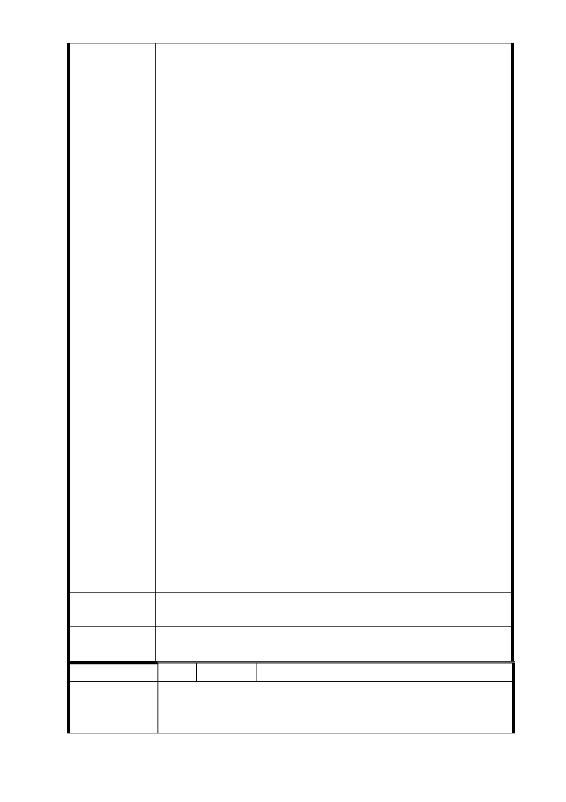

為「捷運用地」，既然如此，「使用分區」變更為「捷運用
地」，自然應將「住三」變更為「商三」，也是理所當然，
有何不可？
市長先生閣下：懇祈您大力爭取，放寬「容積」限制，小市
民多次參加「都市計畫委員會」公聽會，也多次聽聞「委員」
提及：「市府」擁有「萬千」公頃容積，都不釋出，要解決
「捷運用地」問題，多釋出些「容積」，難題不就解決了，
則「南、北」兩區，百餘住戶數千大小市民皆會永銘在心。
因增加建坪「容積」，幾十年困難問題逢刃而解，也改變了
大台北景觀，綠地增加；有工程建設，就業人口也會增加，
財政更因「商業生機、經濟行為」增加稅收，交通發達、地
方繁榮，百利而無害。而信義捷運線東延段「R4 站」南、北
兩區正是位居「廣慈博愛特區」和台北地標「101 大樓」中
間，地位優越、重要；「R3 站」是「福德地區」十數萬居民
進出唯一依賴的「捷運站」，更是未來「觀光客」參訪觀光
的重點所在，必然為方圓 1500 公尺附近商家，帶來不可計數
的商業收入。
假若市長您認為「本案」事情不是「小市民」建請的那麼簡
單、輕鬆、可行性：那「小市民」就「斗膽」建議市長先生
閣下：
一、不要浪費「公帑」，不須改善「景觀、市容」，如僅為
建「捷運出入口」，「小市民」建議取消「本站」，讓本「南、
北」兩區居民，自行步行至「象山」站或「「廣慈博愛院」
站搭乘，減輕政府財政負擔。
二、把「爛攤子」留給下任「新市長」傷腦筋。
三、「小市民」等人，誠摯請求拜謁 市長陳情：如蒙接見，
祈請 市長先生閣下賜准：同意開放：讓所有平面或電視媒體
旁聽，在「網路」討論，讓市民了解，政府究竟為我們做了
多少？
耑此 敬頌鈞安！
建議辦法
市府回應
意見
同編號 16-1 研析意見。
委員會決議 同「市府回應意見」。
編 號 15 陳情人 陳美雅（R04 捷二）
本人所有土地持分為 44.5 ㎡減免地價稅為 5.5 ㎡。參加捷
陳 情 理 由 運聯合開發大樓案依現有各種獎勵條例，將來大樓建好後究
竟可分配到室內居住面積無法獲得確切答案。
- 97 -